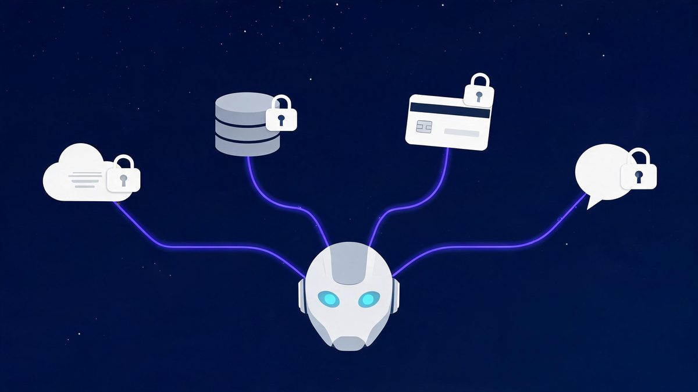
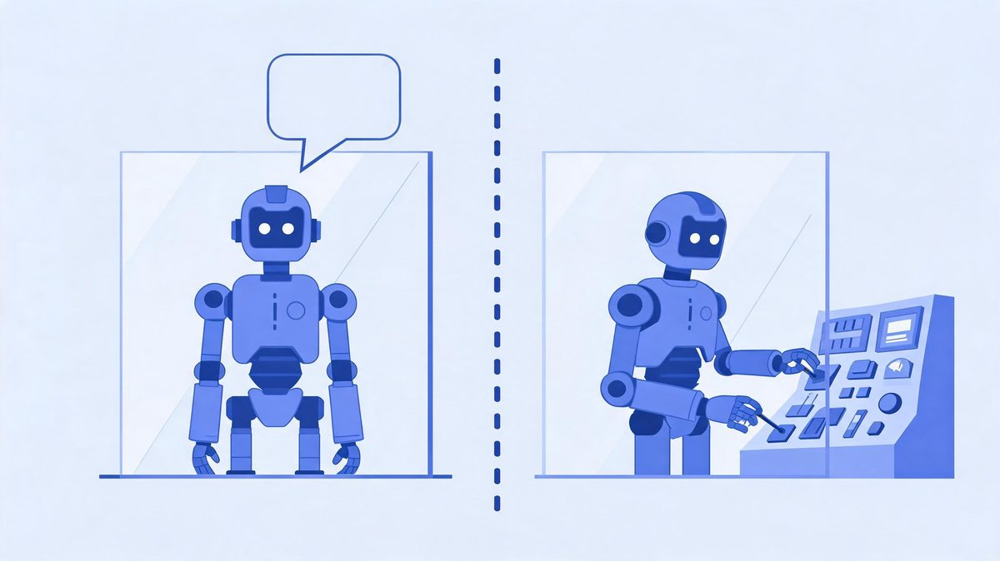
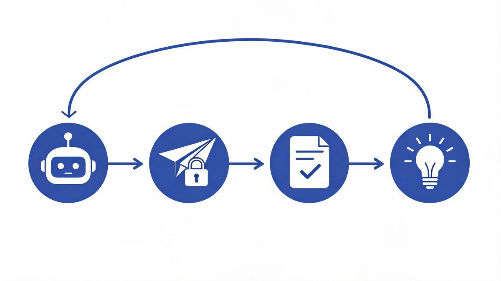
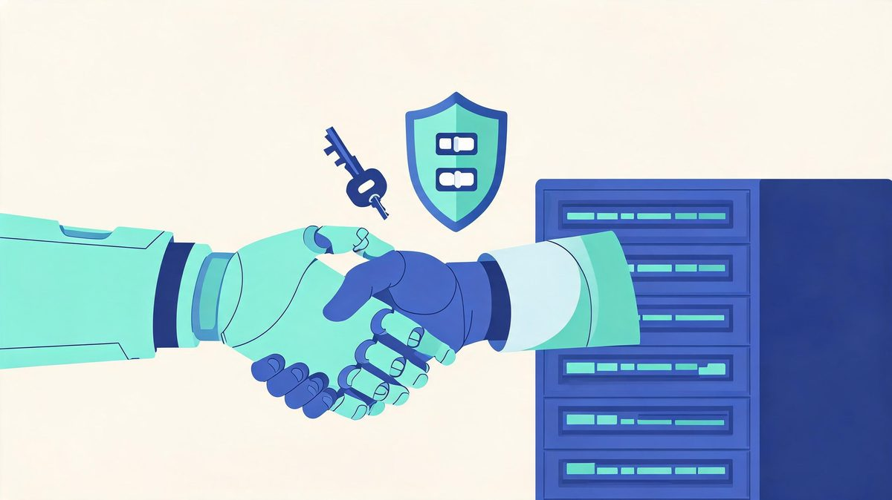
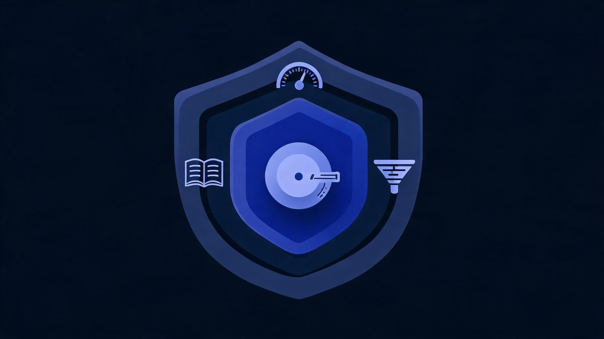

AI Agent Integration With APIs: How Agents Connect to Systems

An AI agent without API access is a consultant locked in a meeting room — smart, articulate, and unable to touch anything. The moment an agent gets scoped API access, it stops giving advice and starts doing work, and IDC's research shows that plumbing is exactly where 88% of pilots die.
Quick answer: AI agents connect to your systems through tool calling: the agent decides which API fits the task, sends an authenticated request, reads the response, and continues its plan. Authentication runs through OAuth-scoped tokens or restricted API keys. The emerging standard for the connection layer is MCP (Model Context Protocol) — one integration that any compatible agent can use.
Key takeaway: Three layers decide whether an agent's API integration works: authentication (scoped OAuth, never a god-mode key), execution (tool calling with validation and rate limits), and observability (audit logs on every call). Get all three right and the agent becomes an employee. Skip one and it becomes IDC's next statistic.
TL;DR:
- Tool calling is the loop: decide → request → respond → reason → repeat. Every framework — OpenAI function calling, Anthropic tool use, MCP — is a variation of it.
- MCP is the new standard: one server exposes tools once, any compatible agent uses them. Direct API integrations still work but cost one connection per tool.
- OAuth with minimal scopes is the authentication pattern — the agent reads what it needs and writes only where you explicitly allow.
- Failures need design: retry with backoff, fallback tools, and human routing. Unhandled API failures are why 88% of pilots die.
Table of Contents
What Does API Integration Mean for an Agent?
API integration gives an AI agent hands: authenticated endpoints where it can retrieve live data and execute actions instead of describing them. The distinction is mechanical, not philosophical. Without APIs, the agent reads text you paste and suggests steps you could take. With APIs, the same model reads your actual CRM, writes actual records, and triggers actual workflows — inside boundaries you draw.

How do AI agents call APIs?
How do AI agents call APIs? Tool calling is the loop AI agents use to call APIs: the agent decides which tool fits the task, sends a structured request with authentication headers, receives the response, and reasons over the result before the next step.
According to Anthropic's engineering documentation, the Model Context Protocol standardizes this discovery-and-calling loop for agents (Sources: Anthropic, 2026). The stakes are large: Gartner forecasts $2.595 trillion in AI spending for 2026, and IDC finds 88% of agent pilots stall on integration issues, the exact layer tool calling runs on (Sources: Gartner, IDC, 2026).
For example, an agent using Salesforce reads an opportunity record, decides the deal went cold, and schedules a follow-up task in one reasoning cycle. We found the loop is simple; the design work lives in tool exposure and scopes.
First, list the actions your workflow needs. Second, expose only those as tools. Finally, validate every response before the agent acts on it.
How Tool Calling Actually Works
Four steps, every time. The framework handles the plumbing; you define the tools.

| Step | What Happens | Your Control |
|---|---|---|
| 1. Decision | Agent picks a tool based on the task | Which tools you expose |
| 2. Request | Structured call with auth headers | Scopes, rate limits, endpoints |
| 3. Response | API returns data or confirmation | Schema validation rules |
| 4. Reasoning | Agent reads result, plans next step | Instructions, guardrails |
Authentication: How Agents Get Access
An agent's API key is its ID badge, its room key, and its spending limit — in one credential.
How do AI agents authenticate with APIs?
How do AI agents authenticate with APIs? OAuth scoping is how AI agents authenticate with APIs: tokens grant read access to what the task needs and write access only where explicitly permitted, replacing copied admin keys.
According to Salesforce and Microsoft implementation guides, agents should run on OAuth tokens with minimal scopes (Sources: Salesforce, Microsoft, 2026). The failure data explains why: IDC finds 88% of agent pilots never reach production, and 62% of organizations still experimenting means security practices are set right now (Sources: IDC, Zscaler, 2026).
For example, a sales agent using Salesforce gets read access to contacts and write access to one notes field, never delete and never admin. We found over-permissioned keys are the most common security mistake, because copying an admin token is faster than defining scopes.
First, create a dedicated credential per agent. Second, scope it to the minimum the workflow requires. Finally, rotate credentials on a schedule.

MCP vs Direct APIs
What is MCP in AI agent integration?
What is MCP in AI agent integration? MCP (Model Context Protocol) is an open standard, introduced by Anthropic, for how AI agents discover and call tools from servers: an MCP server exposes tools once, and any MCP-compatible agent can use the exposed tools without custom integration.
According to integration platform analyses, MCP sits on top of tool calling and standardizes discovery and invocation, so the same server works with different agents (Sources: Nango, 2026). Appian's enterprise analysis adds that MCP gives agents a standard way to find approved tools, and Gartner forecasts $2.595 trillion in AI spending for 2026 (Sources: Appian, Gartner, 2026).
For example, an enterprise using Anthropic-compatible agents exposes CRM, ticketing, and billing through one MCP server, and a support agent and a sales agent use the tools. We found the decision rule is straightforward.
First, direct APIs suit one agent with one or two systems. Second, MCP suits many agents across many tools. Finally, enterprises adopt MCP to stop rebuilding integrations for each agent.
| Aspect | Direct API Integration | MCP Server |
|---|---|---|
| Setup | Custom code per tool | One server, many tools |
| Agent compatibility | Tied to your framework | Any MCP-compatible agent |
| Best for | 1-2 systems, simple workflows | Many agents, many tools |
| Maintenance | Each integration separate | Central updates |
| Adoption | Universal today | Growing enterprise standard |
Security: Rate Limits, Errors, Audit Logs
The API layer is where agent safety is won or lost. The model talks; the API layer decides what talk is allowed to do.
What happens when an API call fails inside an agent workflow?
What happens when an API call fails inside an agent workflow? A well-designed agent workflow responds to API failures three ways: retry with exponential backoff for transient errors, fall back to an alternate tool or path for persistent ones, and route to a human with full context for unrecoverable cases.
According to IDC research, 88% of AI agent pilots never reach production, and unhandled integration failures are a primary blocker rather than model quality (Sources: IDC, 2026). For example, when a CRM endpoint times out mid-update, a naive agent reports success based on its plan; a production agent checks the response, retries twice, then writes the pending action to an exception queue.
We found that difference costs one afternoon of design. First, classify failures as transient, persistent, or unrecoverable. Second, define the response for each class before launch. Finally, alert on exception volume, because a doubling rate means something upstream changed.
The security triad that ships: rate limits contain a runaway loop before it drains your API quota; schema validation stops malformed writes before they corrupt records; audit logs make every agent action reconstructible after the fact. All three are configuration, not aspiration — and all three belong in the first sprint.
Are AI agents secure with API access?
Are AI agents secure with API access? AI agents are as secure as their API permission design: the standard control set is scoped credentials per task, rate limits to contain runaway loops, schema validation before actions execute, and audit logs of every call.
According to IDC's production analysis, security gaps, not model quality, are among the top blockers keeping 88% of pilots from production (Sources: IDC, 2026). For example, an agent with a read-only scope cannot corrupt data no matter how confused the reasoning gets, while the same agent holding an admin key can.
We found teams that write the permission matrix before writing code ship faster, because security reviews pass on the first attempt. First, write the matrix: which agent, which endpoints, which verbs. Second, enforce it in credentials, not in prompts. Finally, review the audit log weekly, because anomalies speak before incidents do.

FAQs
How do AI agents call APIs?
Through tool calling: the agent decides which tool fits the task, sends an authenticated structured request, reads the response, and reasons over the result. OpenAI function calling, Anthropic tool use, and MCP all standardize this loop.
What is MCP in AI agent integration?
Model Context Protocol — an open standard from Anthropic that lets one server expose tools to any compatible agent. It replaces per-tool custom integrations with a single, discoverable connection layer. Think USB-C for AI tool access.
How do AI agents authenticate with APIs?
OAuth tokens scoped to specific resources, restricted API keys, or service accounts. The 2026 standard is OAuth with minimal scopes per agent — read what the task needs, write only where explicitly permitted.
What happens when an API call fails inside an agent workflow?
Designed workflows respond three ways: retry with backoff for transient errors, fallback to alternate tools for persistent ones, and route to a human with full context for unrecoverable failures. Unhandled failures are a top reason pilots die.
Are AI agents secure with API access?
As secure as the permission design allows. Scoped credentials, rate limits, schema validation, and audit logs form the standard control set. Over-permissioned keys are the most common mistake.
Do agents need one API integration per tool?
Not with MCP. Direct integrations need one connection per tool; an MCP server exposes tools once through a standard protocol that any compatible agent can discover and call.
The Bottom Line
API integration is the layer where an AI agent stops being a chat window and starts being infrastructure. The mechanics are learnable in an afternoon: tool calling runs a four-step loop, authentication rides on scoped OAuth, and MCP is collapsing the cost of connecting many agents to many tools. The discipline is where projects separate — scoped credentials written before code, failure paths designed before launch, audit logs reviewed every week. Teams that treat those three as configuration rather than aspiration join the 11% running agents in production; teams that copy an admin token and hope join IDC's 88%. Start with one endpoint, scope it tight, and let the audit log justify the next connection. For the platform-layer decision — which runtime hosts these API connections — the AI agent deployment platforms comparison covers the four camps. The full business context lives in our AI agent integration pillar guide, the workflow automation breakdown covers the monitoring ritual, and the business use-case guide frames the ROI case.
Sources
- Anthropic Engineering — Model Context Protocol: code execution and tool standardization, 2026
- Nango — MCP vs tool calls for AI agents: integration analysis, 2026
- IDC — 88% of AI agent pilots never reach production, via Institute PM, 2026
- Gartner — $2.595T AI spending forecast, 2026
- Salesforce and Microsoft implementation guides — OAuth scoping patterns, 2026
- Grid Dynamics — agentic data integration architecture, 2026